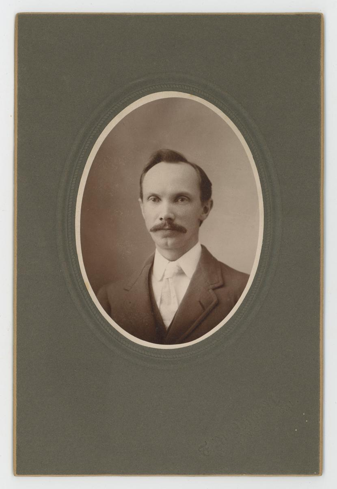

Studio portrait of Thomas Edward Hartley, circa 1895
photo
Cabinet-card studio portrait, said in the family to be Thomas Edward Hartley, about 1895; unmarked mount (fictional example photograph).
Claims
No claims recorded for this source.
Files
- thomas-hartley-portrait.jpg full size